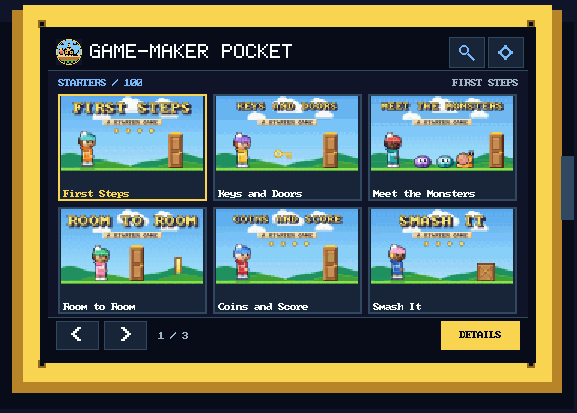

Sandbox Edition
Game-Maker Pocket
DOS games in your pocket
ESP32 / touchscreen / microSD
Flash the Pocket Player onto a small ESP32 touch-screen board from your browser. Nothing to install on your computer.

Pick your board
The pictures are drawings, not photos. Another model? See the Other boards tab first.
Pick a board and tick the box to show the Install button.
Steps
- Desktop Chrome or Edge (Firefox, Safari and phones can't flash).
- Plug the board in with a USB cable that carries data.
- Click Connect, choose the board's serial port, then click Install. It takes a few minutes.
- If it can't connect, hold the BOOT button while plugging in or while clicking Connect.
What gets installed
The player's firmware and, with Player + starter games, five games kept in the board's flash (they show an On board tag and play like card games); with Player + Starter courses, its library (the 106 Starter games). Player only leaves the library empty (just the player's font file), and the player then shows a screen that explains how to add games from a card. The install writes four parts of the 4 MB flash: bootloader, partition table, firmware, and the library's LittleFS area (the last 3 MB). It replaces the games stored on the board and the controls settings (settings.txt lives in that area). It keeps the display setup, touch calibration and other saved values (the board's NVS area, which is not written; checked on a real board: unchanged byte for byte after an install), and it never touches the microSD card. Anything else that was in the 3 MB library area is gone, so back it up first if you stored your own files there.
Adding games to a microSD card
The starter games (or the 106 Starters) are already on the board if you chose them. Any other game goes on a card, one .GMP file each.
- Get games. On the Game-Maker: Sandbox Edition site, open a game and choose Download, then Pocket Player (microSD). It saves
NAME.GMP. - Card. A microSD card formatted FAT32. Cards from 2 to 32 GB usually come that way; bigger cards usually come as exFAT, so reformat them as FAT32 first.
- Folder. Make a folder named
pocketat the top of the card and copy the.GMPfiles into it. Files in subfolders are ignored. - Names. The part before
.GMPis 1 to 11 letters, digits,_or-(no spaces). The extension may be upper or lower case. - Put it in. Switch the board off, insert the card, switch on. Or, with the board on, open Settings, Card, Rescan. Card games show a yellow SD tag; games kept in the board's flash show On board. If a game is on both, the card's copy is the one listed.
Good to know
- The list holds up to 512 games. A game whose id is already listed (a Starter, say) is skipped.
- A file the player can't read as a game pack (wrong name, not format 1, damaged) is skipped without a message: it just isn't listed.
- The player writes only inside
/pocket: a library cache (LIBRARY.CCH) and display setups inboards/. Keepboards/.
Troubleshooting
- "No card": the card didn't mount. Re-seat it, then Settings, Card, Rescan.
- "Can't read the card": it should be FAT32. Reformat as FAT32 (MBR) on your computer.
- "No pocket folder": the folder must be named
pocket, at the top of the card. - A game is missing: check the name rules, that the file is in
/pocketitself, then rescan.
Source: scanCardBatch and mountSD in src/main.cpp, src/cardmsg.h, docs/FIRMWARE.md.
Other or unknown board
The two boards on the Install tab are the ones this firmware was written for. Other ESP32 touch-screen boards can look the same but differ in the display chip or the touch chip. Read this before flashing one.
Fixed when the firmware is built
The pins, the screen size (320 x 240 or 480 x 320), the touch chip (XPT2046 resistive in the 2.8 build, GT911 capacitive in the 3.5 build), the 3.5 build's display driver (ST7796) and the chip family (plain ESP32). Source: src/board.h, src/screen.h, platformio.ini.
Adjustable on the device
Only the 2.8 inch build has the display setup (first start, then BOOT or Settings, Display, Panel setup): driver (ILI9341 or ST7789), inverted colors, red and blue swapped, mirror and orientation, and touch calibration, saved per chip. The 3.5 inch build has no setup screen, so a wrong picture there can't be fixed on the device.
Variants
| Board | Status | Why |
|---|---|---|
| ESP32-2432S028, usual ILI9341 | Works with setup | The supported board: pick 2.8 inch. |
| ESP32-2432S028 with two USB ports ("2 USB", ST7789) | Works with setup | The firmware has an ST7789 driver for this revision: choose it in Panel setup (or hold BOOT 2 seconds on the list). From docs/FIRMWARE.md; not tested on one here. |
| 28 board with inverted or red/blue-swapped colors | Works with setup | Color bits in Panel setup (src/displaysetup.h). |
| ESP32-3248S035 with resistive touch ("R") | Needs a different build | The 3.5 build reads a GT911 capacitive chip only (src/gt911.h); no build here pairs 480 x 320 with resistive touch. |
| ESP32-2432S024 2.4 inch (R or C) | Not supported yet | No build for it. Guess, unchecked: pins close to the 2.8, and the C version has a capacitive chip. |
| ESP32-2432S032 3.2 inch | Not supported yet | No build for it. Guess, unchecked: its own touch wiring. |
| ESP32-S3 touch boards (larger Sunton and similar) | Not supported yet | A different chip. The installer says "Your ESP32-S3 board is not supported" and writes nothing (ESP Web Tools code in ewt/). |
Facts beyond the firmware's own notes are marked as guesses and not checked. Community lists: witnessmenow's Cheap Yellow Display notes and rzeldent's Sunton board definitions (the 3.5 inch board's speaker pin comes from rzeldent's definitions; see NOTICE.md).
Back up and restore with esptool
ESP Web Tools can't back up. With esptool installed (pip install esptool) and your board's serial port as PORT:
esptool.py --port PORT read_flash 0 0x400000 backup.bin esptool.py --port PORT write_flash 0 backup.bin
The first line saves the whole 4 MB flash (several minutes); the second puts it back. A board with another flash size needs that size.
Install the 2.8 inch build on a similar board
Tick the box to show the Install button.
The installer checks the chip: anything that isn't a plain ESP32 is refused. It can't tell the 2.8 board from the 3.5 board; both are plain ESP32 chips.